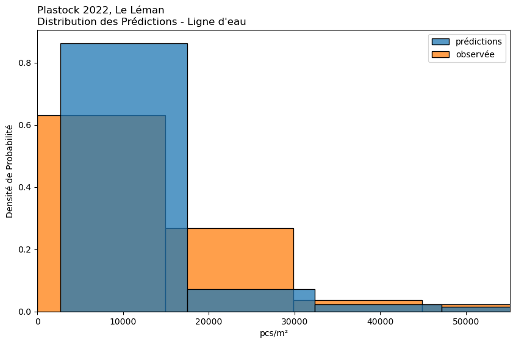
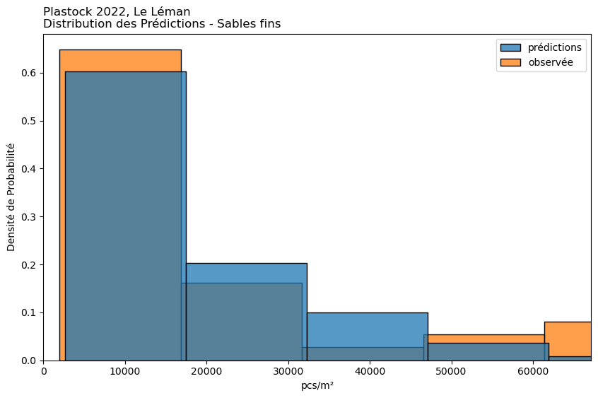
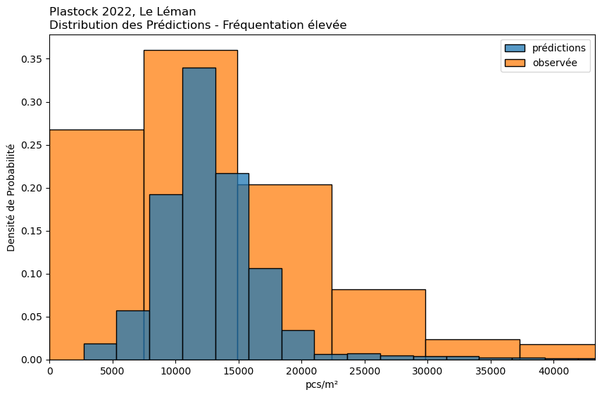
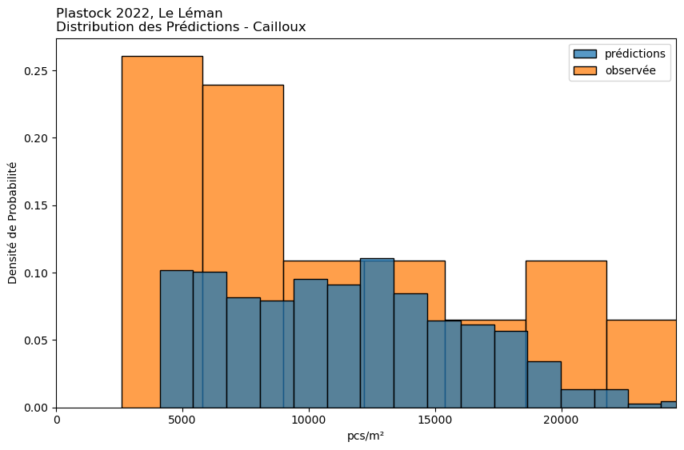
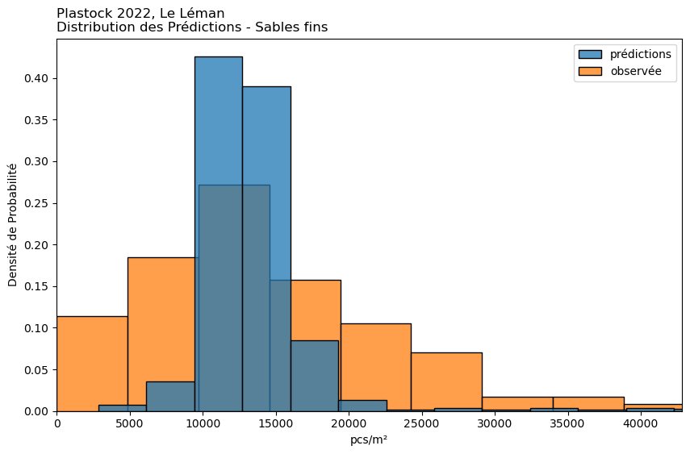
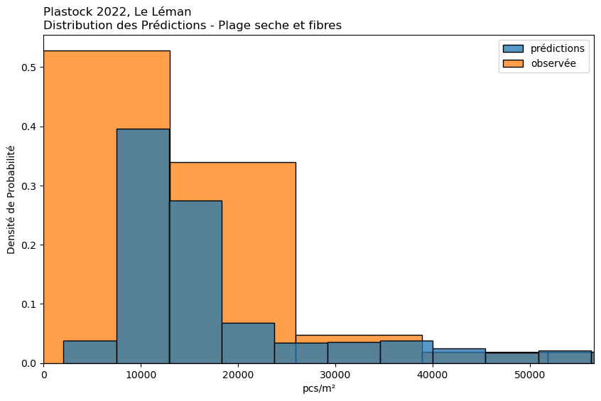
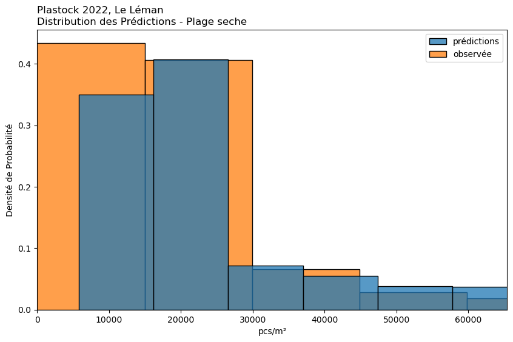

# First initialize the fig variable to a figure
fig = plt.figure()
# Add a 3d axis to the figure
ax = fig.add_subplot(111, projection='3d')
from mpl_toolkits.mplot3d.art3d import Poly3DCollection
vertices = np.zeros([3,8],dtype=int)
vertices[0,:] = [1, 7, 5, 8, 2, 4, 6, 3]
vertices[1,:] = [1, 7, 4, 6, 8, 2, 5, 3]
vertices[2,:] = [6, 1, 5, 2, 8, 3, 7, 4]
vertices = vertices - 1 #(adjust the indices by one since python starts with zero indexing)
# Define an array with dimensions 8 by 3
# 8 for each vertex
# -> indices will be vertex1=0, v2=1, v3=2 ...
# 3 for each coordinate
# -> indices will be x=0,y=1,z=1
cube = np.zeros([8,3])
# Define x values
cube[:,0] = [0, 0, 0, 0, 1, 1, 1, 1]
# Define y values
cube[:,1] = [0, 1, 0, 1, 0, 1, 0, 1]
# Define z values
cube[:,2] = [0, 0, 1, 1, 0, 0, 1, 1]
faces = []
faces.append(np.zeros([5,3]))
faces.append(np.zeros([5,3]))
faces.append(np.zeros([5,3]))
faces.append(np.zeros([5,3]))
faces.append(np.zeros([5,3]))
faces.append(np.zeros([5,3]))
# Bottom face
faces[0][:,0] = [0,0,1,1,0]
faces[0][:,1] = [0,1,1,0,0]
faces[0][:,2] = [0,0,0,0,0]
# Top face
faces[1][:,0] = [0,0,1,1,0]
faces[1][:,1] = [0,1,1,0,0]
faces[1][:,2] = [1,1,1,1,1]
# Left Face
faces[2][:,0] = [0,0,0,0,0]
faces[2][:,1] = [0,1,1,0,0]
faces[2][:,2] = [0,0,1,1,0]
# Left Face
faces[3][:,0] = [1,1,1,1,1]
faces[3][:,1] = [0,1,1,0,0]
faces[3][:,2] = [0,0,1,1,0]
# front face
faces[4][:,0] = [0,1,1,0,0]
faces[4][:,1] = [0,0,0,0,0]
faces[4][:,2] = [0,0,1,1,0]
# front face
faces[5][:,0] = [0,1,1,0,0]
faces[5][:,1] = [1,1,1,1,1]
faces[5][:,2] = [0,0,1,1,0]
# ax.add_collection3d(Poly3DCollection(faces, facecolors='cyan', linewidths=1, edgecolors='k', alpha=.25))
# ax.plot(cube[vertices[0,:],0],cube[vertices[0,:],1],cube[vertices[0,:],2],color='r')
# ax.plot(cube[vertices[1,:],0],cube[vertices[1,:],1],cube[vertices[1,:],2],color='r')
# ax.plot(cube[vertices[2,:],0],cube[vertices[2,:],1],cube[vertices[2,:],2],color='r')
ax.plot(cube
ax.set_xlabel('X')
Text(0.5, 0, 'X')
cube
array([[0., 0., 0.],
[0., 1., 0.],
[0., 0., 1.],
[0., 1., 1.],
[1., 0., 0.],
[1., 1., 0.],
[1., 0., 1.],
[1., 1., 1.]])
cube[vertices[0]]
array([[0., 0., 0.],
[1., 0., 1.],
[1., 0., 0.],
[1., 1., 1.],
[0., 1., 0.],
[0., 1., 1.],
[1., 1., 0.],
[0., 0., 1.]])
vertices[0, :]
array([0, 6, 4, 7, 1, 3, 5, 2])
from scipy.cluster import hierarchy
from scipy.spatial.distance import squareform
from scipy.stats import spearmanr
from collections import defaultdict
from sklearn.inspection import permutation_importance
def plot_permutation_importance(clf, X, y, ax):
result = permutation_importance(clf, X, y, n_repeats=10, random_state=42, n_jobs=2)
perm_sorted_idx = result.importances_mean.argsort()
ax.boxplot(
result.importances[perm_sorted_idx].T,
vert=False,
labels=X.columns[perm_sorted_idx],
)
ax.axvline(x=0, color="k", linestyle="--")
return ax
test_xt = work_datai.copy()
# the sides of the object used to sample
test_xt['pcs_m'] = (test_xt['compte']/100)*10000
# Prepare data for regression
scenario_data = test_x.copy()
scenario_data.reset_index(inplace=True, drop=True)
y_scaler = MinMaxScaler()
y_scaled = y_scaler.fit_transform(scenario_data['pcs_m'].values.reshape(-1,1)).flatten()
# Initialize the OneHotEncoder
# here we encode the ordinal data
encoder = OneHotEncoder(sparse_output=False)
X = scenario_data.drop('pcs_m', axis=1)
print(X.columns)
# Apply the encoder to the categorical columns
# encoded_data = encoder.fit_transform(scenario_data[['fréquentation', 'distance', 'substrat']])
# Create a DataFrame with the encoded data
# X_encoded = pd.DataFrame(encoded_data, columns=encoder.get_feature_names_out(['fréquentation', 'distance', 'substrat']))
# X_encoded["Plage"] = scenario_data.Plage
X_train, X_test, y_train, y_test = train_test_split(X, y_scaled, test_size=0.2, random_state=42)
fig, (ax1, ax2) = plt.subplots(1, 2, figsize=(12, 8))
corr = spearmanr(X).correlation
# Ensure the correlation matrix is symmetric
corr = (corr + corr.T) / 2
np.fill_diagonal(corr, 1)
# We convert the correlation matrix to a distance matrix before performing
# hierarchical clustering using Ward's linkage.
distance_matrix = 1 - np.abs(corr)
dist_linkage = hierarchy.ward(squareform(distance_matrix))
dendro = hierarchy.dendrogram(
dist_linkage, labels=X.columns.to_list(), ax=ax1, leaf_rotation=90
)
dendro_idx = np.arange(0, len(dendro["ivl"]))
ax2.imshow(corr[dendro["leaves"], :][:, dendro["leaves"]])
ax2.set_xticks(dendro_idx)
ax2.set_yticks(dendro_idx)
ax2.set_xticklabels(dendro["ivl"], rotation="vertical")
ax2.set_yticklabels(dendro["ivl"])
_ = fig.tight_layout()
Index(['fréquentation', 'situation', 'distance', 'substrat'], dtype='object')
Index(['fréquentation', 'situation', 'distance', 'substrat'], dtype='object')
X_train, X_test, y_train, y_test = train_test_split(X, y_scaled, test_size=0.2, random_state=42)
cluster_ids = hierarchy.fcluster(dist_linkage, 1, criterion="distance")
cluster_id_to_feature_ids = defaultdict(list)
for idx, cluster_id in enumerate(cluster_ids):
cluster_id_to_feature_ids[cluster_id].append(idx)
selected_features = [v[0] for v in cluster_id_to_feature_ids.values()]
selected_features_names = X.columns[selected_features]
print(selected_features_names)
X_train_sel = X_train[selected_features_names]
X_test_sel = X_test[selected_features_names]
clf_sel = RandomForestRegressor(n_estimators=estimators, criterion="absolute_error", random_state=42)
clf_sel.fit(X_train_sel, y_train)
print(
"Baseline accuracy on test data with features removed:"
f" {clf_sel.score(X_test_sel, y_test):.2}"
)
selected_features_names
Index(['fréquentation'], dtype='object')
Baseline accuracy on test data with features removed: 0.037
Index(['fréquentation'], dtype='object')
fig, ax = plt.subplots(figsize=(7, 6))
ax = plot_permutation_importance(clf_sel, X_test_sel, y_test, ax)
ax.set_title("Permutation Importances on selected subset of features\n(test set)")
ax.set_xlabel("Decrease in accuracy score")
plt.show()
# feat_importances = pd.DataFrame(feature_importance, index=imp_cols, columns=["Importance"])
# feat_importances = feat_importances.sort_values(by="Importance", ascending=False)
# fig, ax = plt.subplots()
# sns.barplot(feat_importances, y=feat_importances.index, x="Importance", ax=ax)
# ax.tick_params(which='both', axis='x', labelrotation=45)
# ax.set_title("Importance des variables, postion = Ligne d'eau", loc='left')
# plt.tight_layout()
# plt.savefig('variable_importance.png')
# plt.show()
2. Micros particules#
Format
Le format suit celui de l’annexe pour les microplastiques . Nous incluons également l’analyse utilisant des variables combinées selon la méthode décrite dans la section Résultats précédents.
Le système de mesure.
Dans cette section, les unités sont des déchets par mètre² de rivage: (pcs/m²)
2.1. Resumé des résultats#
2.1.1. Autres campganes études#
2.1.2. Différences entre les types de plage#
2.2. Situation#
resumé de microplastiques table A1-4 and Fig 3
avec détail du table A1-5
Dates d’echantillonage
2.2.1. Random Forest#
Source : scikit-learn random forest
criterion : absolute error
La régression avec forêt aléatoire est une technique d’apprentissage automatique (machine learning) utilisée pour prédire des résultats continus (par opposition aux catégories dans la classification). C’est une méthode d’apprentissage ensembliste, ce qui signifie qu’elle combine les prédictions de plusieurs algorithmes d’apprentissage automatique pour produire des prédictions plus précises.







observée
prédiction
1%
0
3'650
25%
7'000
10'120
50%
12'100
12'775
75%
19'800
15'338
99%
106'016
169'305
Moyenne
18'013
17'423
Les modèles ont fait l’objet d’un bootstrap, 100 itérations pour chaque scénario. Les résultats estimés sont la collection de toutes les prédictions de chaque itération.
Par exemple, le tableau intitulé “Gravier” présente les résultats observés et prévus pour les plages ayant un substrat de 3 ou 4.
observée
prédiction
1%
2'648
5'580
25%
7'200
10'125
50%
11'700
14'108
75%
20'900
26'825
99%
216'516
198'132
Moyenne
26'784
25'416
observée
prédiction
1%
0
4'580
25%
7'150
10'455
50%
12'450
12'280
75%
19'400
14'740
99%
100'571
33'546
Moyenne
16'623
12'932
observée
prédiction
1%
2'645
4'660
25%
5'750
7'599
50%
9'250
11'460
75%
15'575
14'795
99%
51'605
22'730
Moyenne
12'520
11'533
observée
prédiction
1%
0
6'525
25%
8'275
11'645
50%
13'200
12'845
75%
20'000
14'480
99%
85'969
58'321
Moyenne
16'969
14'361
observée
prédiction
1%
0
6'015
25%
7'850
10'855
50%
12'400
13'650
75%
18'700
20'789
99%
88'180
76'400
Moyenne
19'134
19'958
observée
prédiction
1%
0
7'740
25%
10'500
14'900
50%
17'000
18'378
75%
23'825
25'540
99%
147'120
103'100
Moyenne
24'642
25'443
observée
prédiction
1%
20
39
25%
54
90
50%
85
116
75%
129
140
99%
687
631
Moyenne
117
137
2.3. Substrat#
Le substrat définit la surface de l’emplacement d’échantillonnage.
Git repo: https://github.com/hammerdirt-analyst/plastock.git
Git branch: dec20
seaborn : 0.12.2
pandas : 2.0.0
matplotlib: 3.7.1
numpy : 1.24.2